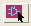
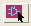
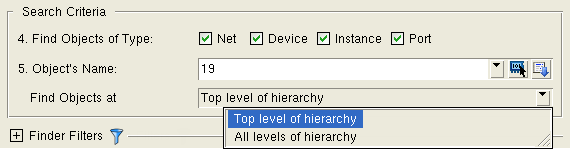

Find Particular Objects
Access with: View > Finder, then choose “Particular Objects” for “What type of search?”
Searches in: Layout or Source
Requires: PHDB for layout search; XDB for source search. See Mask SVDB Directory in the SVRF Manual.
Use the “Particular Objects” search on the Finder tab to find design elements in either the source or the layout, using optional search filters. You can also enter a space separated list of objects to search for.
Description
Enter the object to search for in the Object’s Name field.
You can also select object(s) in
the layout or schematic by clicking the  or  icon; this immediately places
the selected object(s) in the search results area.
or  icon; this immediately places
the selected object(s) in the search results area.

Objects
Item |
Description |
|---|---|
Find Objects of Type |
Select the design elements to search for. |
Object’s Name |
Enter the name, or use the dropdown list of previous search items. You can enter single item, or a space separated list of items. Wildcards (* and ?) can be used for searches in the layout, but this extends the search time. Wildcards are not supported for searches in the source. |
Find Objects at |
Select “Top level of hierarchy” (default) or “All level of hierarchy.” |
Layout or Source Icon
|
Select net(s) or device(s) in attached viewer. The selected objects are immediately placed in the search results area. If you enable “Highlight found objects” in the pop-up dialog box, the objects are also highlighted in attached layout and schematic viewers.
Search filters apply when selecting an object in the layout. Note: for Cadence Virtuoso, you must enter Ctrl-C to end the selection process. See “Select and Highlight Objects in Design Tools Using Finder” for additional usage information. |
Show Highlight Menu
|
Click to display a menu with options for highlighting and displaying information about the object. |
Search Filters |
You can apply filters to the layers, devices, and area (window) that are searched. Check the items you want included in the search. Some filters apply when expanding nodes in the search results. See “Search and Selection Filters in the Finder Tab”. |